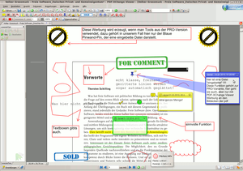
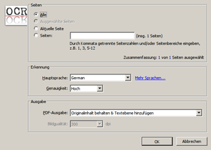

PDF-XChange Viewer
Dieser Artikel wurde für die folgenden Ubuntu-Versionen getestet:
Dieser Artikel ist mit keiner aktuell unterstützten Ubuntu-Version getestet! Bitte diesen Artikel testen und das getestet-Tag entsprechend anpassen.
Zum Verständnis dieses Artikels sind folgende Seiten hilfreich:
Dieser Artikel beschreibt die Installation und Benutzung des kostenlosen Windows-Programms PDF-XChange Viewer  . Obwohl das Programm in erster Linie ein PDF-Betrachter ist, ist es zusätzlich möglich, einem PDF-Dokument Markierungen und Kommentare hinzuzufügen. Die erzeugten Dateien bleiben dabei mit anderen PDF-Betrachtern kompatibel. Die Lizenzbedingungen gestatten den Einsatz für private und kommerzielle Nutzung.
. Obwohl das Programm in erster Linie ein PDF-Betrachter ist, ist es zusätzlich möglich, einem PDF-Dokument Markierungen und Kommentare hinzuzufügen. Die erzeugten Dateien bleiben dabei mit anderen PDF-Betrachtern kompatibel. Die Lizenzbedingungen gestatten den Einsatz für private und kommerzielle Nutzung.
Die Programmsprache kann bei und nach der Installation auf Deutsch umgestellt werden. Die Programmversion 2.0 genießt in der Wine Application Database den Status "Platinum", lässt sich also auf 32-bit-Systemen problemlos installieren und funktioniert ohne Einschränkungen.
Es gibt inzwischen einen Nachfolger mit der Bezeichnung PDF-XChange Editor, der zusätzliche Editier-Funktionen bietet und auch auf 64-bit-Systemen einwandfrei funktioniert.
Voraussetzungen¶
Da es sich bei PDF-XChange Viewer um ein Windows-Programm handelt, kann dieses nur mit Hilfe von Wine unter Linux installiert und genutzt werden. Es sollte eine möglichst aktuelle Wine-Version installiert sein. Alternativ können auch PlayOnLinux oder die kommerzielle Wine-Variante CrossOver genutzt werden.
Versionsübersicht¶
Die folgende Tabelle stellt eine Übersicht aller bisher getesteten Kombinationen aus Wine- und Programm-Version dar.
| Wine-Version | PDF-XChange-Viewer-Version | Anmerkung |
| 1.4.1 | 2.5.211 | 64-Bit Wine: Viewer reagiert mit Absturz, wenn man mehr als ein Dokument gleichzeitig öffnet, sonst keine Probleme entdeckt. |
| 1.4 | 2.5.207 | 64-Bit Wine: kein Speichern möglich, die Suche nach Schlüsselwörtern funktioniert nicht. Eine Installation kann nur dann erfolgreich durchgeführt werden, wenn als Setup-Sprache "English" (anstelle von "Deutsch") ausgewählt wird. Nach erfolgreicher Installation kann die Standardsprache der Anwendung unter Bearbeiten -> Grundeinstellungen -> andere Sprache wählen wieder auf "Deutsch" umgestellt werden. |
| 1.2.1 | 2.5.188 | evtl. störende Linien (siehe Problembehebung) |
| 1.4 | 2.0.57 | 64-Bit Wine: kein Speichern möglich, die Suche nach Schlüsselwörtern funktioniert nicht |
| 1.1.31, 1.4 | 2.0.49.0 | keine Probleme |
| 1.4 | 2.0.42.10 | keine Probleme |
Weitere Versionsvergleiche und Bewertungen finden sich in der Wine Application Database .
Installation¶
PDF-XChange Viewer via Wine installieren¶
Zunächst lädt man sich eine ausführbare "EXE-Datei" des PDF-XChange Viewer herunter, die unter Wine läuft bzw. für die möglichst wenig Fehler bekannt sind (für nähere Informationen und Download-Adressen siehe Tabelle in Abschnitt Versionsübersicht). Die aktuelle Version kann u.a. auf der Herstellerseite heruntergeladen werden. Hierbei ist allerdings zu beachten, dass es erfahrungsgemäß eher bei neueren Programmversionen zu Probleme kommen kann, da Wine immer der aktuellen Windows-Version hinterherhinkt.
Dann installiert man diese mit Hilfe von Wine (Rechtsklick auf die Datei -> Mit Wine Windows-Programmstarter öff...) [1]. Eventuell muss die heruntergeladene Datei erst ausführbar gemacht werden. Dazu geht man wie folgt vor: Rechtsklick auf die Datei -> Eigenschaften -> Zugriffsrechte und macht einen Haken bei "Datei als Programm ausführen". Nun folgt man dem windowstypischen Installationsdialog.
Durch die Installation werden auf dem Desktop zwei Dateien angelegt. Diese können bedenkenlos gelöscht werden. Es kann sein, dass bei einer normalen Installation auftretende Probleme bei der Verwendung der portablen Version (s.u.) vermieden werden können.
PDF-XChange Viewer als portable Version¶
Der Sinn portabler Programme ist, dass man sie ohne Installation auf jedem Windows-PC nutzen kann. Dies funktioniert in diesem Fall auch unter Ubuntu problemlos. Man lädt sich PDF-XChange Viewer als "Portable ZIP" herunter und entpackt die Archivdatei. Zum Programmstart ruft man die Datei "PDFXCview.exe" auf.
Im Folgenden wird von einem normal installierten PDF-XChange Viewer ausgegangen.
Bedienung¶
Programmstart¶
Im Wine-Menü (in GNOME z.B. unter Anwendungen -> Wine -> Programme -> PDF-XChange PDF Viewer -> PDF-Viewer) findet sich der Programmstarter. Wem dieser Weg zu lang ist, kann den Starter einfach auf den Desktop bzw. ein Panel ziehen oder er sortiert das "Anwendungen"-Menü mittels Menüeditor nach Belieben um.
Dokumente öffnen und bearbeiten¶

Über den "Öffnen"-Dialog im Programm können PDF-Dokumente geladen werden. Alternativ steht auch im Kontextmenü ( ) des Dateimanagers der Eintrag "Mit PDF-XChange Viewer öffnen" zur Verfügung, durch den das Programm mit dem ausgewählten Dokument sofort gestartet wird. Ein PDF-Dokument lässt sich auch mit gedrückter linker Maustaste (via Drag & Drop) auf das Programmfenster ziehen.
) des Dateimanagers der Eintrag "Mit PDF-XChange Viewer öffnen" zur Verfügung, durch den das Programm mit dem ausgewählten Dokument sofort gestartet wird. Ein PDF-Dokument lässt sich auch mit gedrückter linker Maustaste (via Drag & Drop) auf das Programmfenster ziehen.
Im oberen Bereich des Fensters stehen zahlreiche Schaltflächen zur direkten Anwahl von Werkzeugen für die Dokumentenbearbeitung bereit. Neben den üblichen Betrachtungsfunktionen (drehen, zoomen) gibt es Markier-, Kommentar-, Stempel- und Zeichenfunktionen in zahlreichen Farben und Formen.
Die dem Dokument hinzugefügten Ergänzungen werden in der Datei selbst gespeichert und bleiben daher beim Transfer auf andere Rechner und bei der Anzeige mit anderen Betrachtern erhalten.
In Firefox einbinden¶
Will man PDF-XChange Viewer direkt starten, um ihn z.B. als Standardbetrachter für Firefox zu nutzen, kann man folgendes Script verwenden [2]:
1 2 3 4 5 6 7 8 9 10 | #!/bin/bash PDFXVIEWER=~/".wine/drive_c/Programme/Tracker Software/PDF Viewer/PDFXCview.exe" if (($# != 1)); then echo "usage: $0 filename" exit 1 fi cd "$(dirname "$1")" wine "$PDFXVIEWER" "$(basename "$1")" |
Anschließend kopiert man die Datei mit Root-Rechten [3] z.B. als /usr/local/bin/pdfxchange ins System und setzt die passende Rechte zum Ausführen [4]:
sudo chmod 775 /usr/local/bin/pdfxchange
Jetzt kann PDF-XChange z.B. über das Terminal [5] gestartet werden:
pdfxchange PDFDATEI.pdf
Nun kann man den PDF-XChange Viewer in Firefox einbinden. Dazu in den Einstellungen in Firefox unter "Bearbeiten -> Einstellungen -> Anwendungen -> (nach PDF suchen) -> als Befehl: /usr/local/bin/pdfxchange" eintragen.
OCR-Funktionen¶
 Neben den Kommentarfunktionen bietet PDF-XChange Viewer noch eine weitere interessante Möglichkeit speziell für PDF-Dateien, die den Text als Bild enthalten. Solche PDF-Dateien können weder durchsucht noch Textstellen daraus entnommen werden. Dann kann man versuchen, den Text im PDF-Dokument mit Texterkennung (OCR) zu erkennen.
Ab Version 2.5 bietet der Installer alles nötige an. Für frühere Versionen braucht man von der Downloadseite die "Portable Version (OCR Lang Files)" (PDFX_Vwr_Port_OCR.zip) und entpackt die Archivdatei in den Ordner mit PDF-XChange Viewer (es entsteht ein neuer Unterordner ocrdats). Beim nächsten Start des Programms steht ein neuer Menüpunkt "Dokument -> Text erkennen" für die Sprachen Englisch, Französisch, Deutsch und Spanisch zur Verfügung, um problematische PDF-Dateien umzuwandeln.
Funktionsvergleich¶
Die im Folgenden aufgeführten Features sollen einen Überblick geben und erheben keinen Anspruch auf Vollständigkeit. Eine vollständige Liste der Leistungsmerkmale und Unterschiede zwischen kostenloser und kostenpflichtiger Version sind auf der Herstellerseite zu finden.
PDF-XChange Viewer (Freeware)¶
Einfügen von Kommentaren und Anmerkungen
Bearbeiten von Textstellen (hervorheben, unterstreichen, durchstreichen)
Setzen der Dokumenteigenschaften (Beschreibung, Ansicht zu Beginn)
Schnappschusswerkzeug
Vermessungswerkzeuge (Abstand, Strecke, Fläche)
u.v.m.
PDF-Xchange Viewer PRO¶
Die zusätzlichen Features der kostenpflichtigen PRO-Version des PDF-XChange Viewers können durch Erwerb einer Lizenz freigeschaltet werden. Viele der zusätzlichen Features der PRO-Version sind auch in der kostenlosen Version einsetzbar, jedoch unter der Einschränkung, dass durch die Benutzung dem Dokument beim Speichern Kaufhinweise für die PRO-Version hinzugefügt werden (siehe Abbildung).
Kompatibilität zu anderen PDF-Anzeigeprogrammen¶
Adobe Reader (Windows)¶
Unter den Versionen 8.x und 9.x des Adobe Readers  werden alle durch den PDF-XChange Viewer erzeugten Ergänzungen vollständig und fehlerfrei dargestellt. Beim Ausdruck sollte man allerdings darauf achten, auch die Druckoption "Dokument und Markierungen" bzw. "Dokument und Stempel" zu aktivieren.
werden alle durch den PDF-XChange Viewer erzeugten Ergänzungen vollständig und fehlerfrei dargestellt. Beim Ausdruck sollte man allerdings darauf achten, auch die Druckoption "Dokument und Markierungen" bzw. "Dokument und Stempel" zu aktivieren.
Evince (GNOME)¶
Der GNOME Standard-Dokumentenbetrachter Evince zeigt ab Ubuntu 10.10 alle Ergänzungen fehlerfrei an.
Problembehebung¶
Störende Linien¶
Gelegentlich berichten Anwender über Linien, die als Scroll-Artefakte im Programmfenster auftauchen. Abhilfe schafft, die Option "Bearbeiten -> Grundeinstellungen -> Leistung -> Synchronen Modus zur Seitendarstellung verwenden" zu aktivieren.
Links¶
Fragen und Antworten zum PDF-XChange Tool
- Blogbeitrag, 08/2013Native Linux-Programme, um Notizen in PDF-Dateien einzufügen:
PDF
 Übersichtsartikel
Übersichtsartikel
- Erstellt mit Inyoka
-
 2004 – 2017 ubuntuusers.de • Einige Rechte vorbehalten
2004 – 2017 ubuntuusers.de • Einige Rechte vorbehalten
Lizenz • Kontakt • Datenschutz • Impressum • Serverstatus -
Serverhousing gespendet von